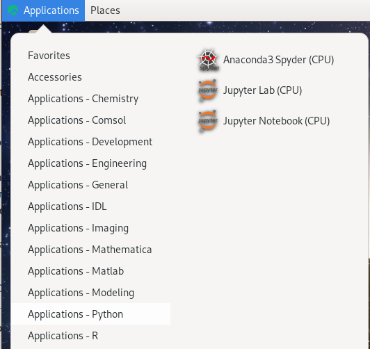
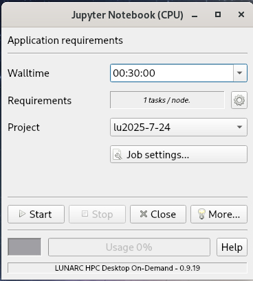
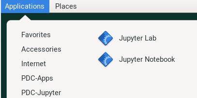
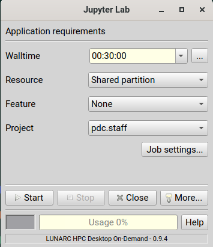

Jupyter is web application that (among other things) allows literature programming for Python. That is, Jupyter allows to create documents where Python code is shown and run and its results shown, surrounded by written text (e.g. English).
Additionally, Jupyter allows to share files and hence includes a file manager.
Jupyter is:
started and run on a server, for example, an interactive node
displayed in a web browser, such as firefox.
Jupyter can be slow when using a remote desktop website (e.g. pelle-gui.uppmax.uu.se or kebnekaise-tl.hpc2n.umu.se).
For HPC2N, as JupyterLab it is only accessible from within HPC2N’s domain, and there is no way to improve any slowness
For UPPMAX, one can use a locally installed ThinLinc client to speed up Jupyter. See the UPPMAX documentation on ThinLinc on how to install the ThinLinc client locally
For LUNARC, you can run Jupyter either in compute nodes through Anaconda or through the LUNARC HPC desktop. The latter is recommended. There is information about Jupyter at LUNARC in their documentation.
For NSC, you can start Thinlinc and run Jupyter on a login node, or use a browser on your local computer with SSH tunneling which could be faster.
Note
Depending on your requirement of GPU or CPU, you can use Jupyter on Pelle compute node.
1. Login to a remote desktop
Alt1. Login to the remote desktop website at pelle-gui.uppmax.uu.se
Alt2. Login to your local ThinLinc client
2. start an interactive session
Start a terminal. Within that terminal, start an interactive session from the login node (change to the correct NAISS project ID)
$interactive-Auppmax2025-2-393-t4:00:00
$interactive-A<proj>-t4:00:00
3. start Jupyter in the interactive session
Within your terminal with the interactive session, load a modern Python module:
moduleloadJupyterLab/4.2.5-GCCcore-13.3.0
Then, start jupyter-notebook (or jupyter-lab):
jupyter-notebook--ip0.0.0.0--no-browser
This will start a jupyter server session so leave this terminal open. The terminal will also display multiple URLs.
4. Connect to the running Jupyter server
On ThinLinc
If you use the ThinLinc, depending on which Jupyter server (Pelle) you want to launch on web browser
start firefox on the ThinLinc.
browse to the URLs, which will be similar to http://p[xxx].uppmax.uu.se:8888/?token=5c3aeee9fbfc7a11c4a64b2b549622231388241c2
Paste the url and it will start the Jupyter interface on ThinLinc and all calculations and files will be on Pelle.
On own computer
If you want to connect to the Jupyter server running on Pelle from your own computer, you can do this by using SSH tunneling. Which means forwarding the port of the interactive node to your local computer.
On Linux or Mac this is done by running in another terminal. Make sure you have the ports changed if they are not at the default 8888.
$ssh-L8888:p[xxx]:8888username@pelle.uppmax.uu.se
If you use Windows it may be better to do this in the PowerShell instead of a WSL2 terminal.
If you use PuTTY - you need to change the settings in “Tunnels” accordingly (could be done for the current connection as well).
On your computer open the URL you got from step 3. on your webbrowser but replace r486 with localhost i.e. you get something like this
http://localhost:8888/?token=5c3aeee9fbfc75f7a11c4a64b2b5b7ec49622231388241c2
or
http://127.0.0.0:8888/?token=5c3aeee9fbfc75f7a11c4a64b2b5b7ec49622231388241c2
This should bring the jupyter interface on your computer and all calculations and files will be on Pelle.
Warning
Running Jupyter in a virtual environment
You could also use jupyter (-lab or -notebook) in a virtual environment.
If you decide to use the –system-site-packages configuration you will get jupyter from the python modules you created your virtual environment with.
However, you won’t find your locally installed packages from that jupyter session. To solve this reinstall jupyter within the virtual environment by force:
$ pipinstall-Ijupyter
and run:
$ jupyter-notebook
Be sure to start the kernel with the virtual environment name, like “Example”, and not “Python 3 (ipykernel)”.
Since the JupyterLab will only be accessible from within HPC2N’s domain, it is by far easiest to do this from inside ThinLinc, so this is highly recommended. You can find information about using ThinLinc at HPC2N’s documentation
1. Check JupyterLab version
At HPC2N, you currently need to start JupyterLab on a specific compute node. To do that you need a submit file and inside that you load the JupyterLab module and its prerequisites (and possibly other Python modules if you need them - more about that later).
To see the currently available versions, do:
$ modulespiderJupyterLab
You then do:
$ modulespiderJupyterLab/<version>
for a specific <version> to see which prerequisites should be loaded first.
Example, loading JupyterLab/4.0.5
$ moduleloadGCC/12.3.0JupyterLab/4.0.5
2. Start Jupyter on the compute node
Make a submit file with the following content. You can use any text editor you like, e.g. nano or vim.
Something like the file below will work. Remember to change the project id after the course, how many cores you need, and how long you want the JupyterLab to be available:
#!/bin/bash#SBATCH -A hpc2n2026-002# This example asks for 1 core#SBATCH -n 1# Ask for a suitable amount of time. Remember, this is the time the Jupyter notebook will be available! HHH:MM:SS.#SBATCH --time=05:00:00# Clear the environment from any previously loaded modules
modulepurge>/dev/null2>&1# Load the module environment suitable for the job
moduleloadGCC/12.3.0JupyterLab/4.0.5
# Start JupyterLab
jupyterlab--no-browser--ip$(hostname)
Where the flags used to the Jupyter command has the following meaning (you can use Jupyter--help and Jupyterlab--help> to see extra options):
lab: This launches JupyterLab computational environment for Jupyter.
- -no-browser: Prevent the opening of the default url in the browser.
- -ip=<IP address>: The IP address the JupyterLab server will listen on. Default is ‘localhost’. In the above example script I use $(hostname) to get the content of the environment variable for the hostname for the node I am allocated by the job.
Note again that the JupyterLab is only accessible from within the HPC2N domain, so it is easiest to work on the ThinLinc.
Submit the above submit file. Here I am calling it MyJupyterLab.sh
$ sbatchMyJupyterLab.sh
3. Connect to the running Jupyter server
Wait until the job gets resources allocated. Check the SLURM output file; when the job has resources allocated it will have a number of URLs inside at the bottom.
The SLURM output file is as default named slurm-<job-id>.out where you get the <job-id> when you submit the SLURM submit file (from previous step).
NOTE: Grab the URL with the hostname since the localhost one requires you to login to the compute node and so will not work!
The file will look similar to this:
slurm-<job-id>.out
b-an03 [~]$ cat slurm-24661064.out[I 2024-03-09 15:35:30.595 ServerApp] Package jupyterlab took 0.0000s to import[I 2024-03-09 15:35:30.617 ServerApp] Package jupyter_lsp took 0.0217s to import[W 2024-03-09 15:35:30.617 ServerApp] A `_jupyter_server_extension_points` function was not found in jupyter_lsp. Instead, a `_jupyter_server_extension_paths` function was found and will be used for now. This function name will be deprecated in future releases of Jupyter Server.[I 2024-03-09 15:35:30.626 ServerApp] Package jupyter_server_terminals took 0.0087s to import[I 2024-03-09 15:35:30.627 ServerApp] Package notebook_shim took 0.0000s to import[W 2024-03-09 15:35:30.627 ServerApp] A `_jupyter_server_extension_points` function was not found in notebook_shim. Instead, a `_jupyter_server_extension_paths` function was found and will be used for now. This function name will be deprecated in future releases of Jupyter Server.[I 2024-03-09 15:35:30.627 ServerApp] jupyter_lsp | extension was successfully linked.[I 2024-03-09 15:35:30.632 ServerApp] jupyter_server_terminals | extension was successfully linked.[I 2024-03-09 15:35:30.637 ServerApp] jupyterlab | extension was successfully linked.[I 2024-03-09 15:35:30.995 ServerApp] notebook_shim | extension was successfully linked.[I 2024-03-09 15:35:31.020 ServerApp] notebook_shim | extension was successfully loaded.[I 2024-03-09 15:35:31.022 ServerApp] jupyter_lsp | extension was successfully loaded.[I 2024-03-09 15:35:31.023 ServerApp] jupyter_server_terminals | extension was successfully loaded.[I 2024-03-09 15:35:31.027 LabApp] JupyterLab extension loaded from /hpc2n/eb/software/JupyterLab/4.0.5-GCCcore-12.3.0/lib/python3.11/site-packages/jupyterlab[I 2024-03-09 15:35:31.027 LabApp] JupyterLab application directory is /cvmfs/ebsw.hpc2n.umu.se/amd64_ubuntu2004_skx/software/JupyterLab/4.0.5-GCCcore-12.3.0/share/jupyter/lab[I 2024-03-09 15:35:31.028 LabApp] Extension Manager is 'pypi'.[I 2024-03-09 15:35:31.029 ServerApp] jupyterlab | extension was successfully loaded.[I 2024-03-09 15:35:31.030 ServerApp] Serving notebooks from local directory: /pfs/stor10/users/home/b/bbrydsoe[I 2024-03-09 15:35:31.030 ServerApp] Jupyter Server 2.7.2 is running at:[I 2024-03-09 15:35:31.030 ServerApp] http://b-cn1520.hpc2n.umu.se:8888/lab?token=c45b36c6f22322c4cb1e037e046ec33da94506004aa137c1[I 2024-03-09 15:35:31.030 ServerApp] http://127.0.0.1:8888/lab?token=c45b36c6f22322c4cb1e037e046ec33da94506004aa137c1[I 2024-03-09 15:35:31.030 ServerApp] Use Control-C to stop this server and shut down all kernels (twice to skip confirmation).[C 2024-03-09 15:35:31.039 ServerApp]To access the server, open this file in a browser: file:///pfs/stor10/users/home/b/bbrydsoe/.local/share/jupyter/runtime/jpserver-121683-open.htmlOr copy and paste one of these URLs: http://b-cn1520.hpc2n.umu.se:8888/lab?token=c45b36c6f22322c4cb1e037e046ec33da94506004aa137c1 http://127.0.0.1:8888/lab?token=c45b36c6f22322c4cb1e037e046ec33da94506004aa137c1[I 2024-03-09 15:35:31.078 ServerApp] Skipped non-installed server(s): bash-language-server, dockerfile-language-server-nodejs, javascript-typescript-langserver, jedi-language-server, julia-language-server, pyright, python-language-server, python-lsp-server, r-languageserver, sql-language-server, texlab, typescript-language-server, unified-language-server, vscode-css-languageserver-bin, vscode-html-languageserver-bin, vscode-json-languageserver-bin, yaml-language-server
To access the server, go to file:///.local/share/jupyter/runtime/jpserver-<newest>-open.html from a browser within the ThinLinc session. <newest> is a number that you find by looking in the directory .local/share/jupyter/runtime/ under your home directory.
Or, to access the server you can copy and paste the URL from the file that is SIMILAR to this: http://b-cn1520.hpc2n.umu.se:8888/lab?token=c45b36c6f22322c4cb1e037e046ec33da94506004aa137c1
NOTE of course, do not copy the above, but the similar looking one from the file you get from running the batch script!!!
Webbrowser view
Start a webbrowser within HPC2N (ThinLinc interface). Open the html or put in the URL you grabbed, including the token:
After a few moments JupyterLab starts up:
You shut it down from the menu with “File” > “Shut Down”
For the course:
If you want to start a Jupyter with access to matplotlib and seaborn, for use with this course for the session on matplotlib, then do the following:
3.1. Start ThinLinc and login to HPC2N as described under preparations
#!/bin/bash
#SBATCH -A hpc2n2026-002
# This example asks for 1 core
#SBATCH -n 1
# Ask for a suitable amount of time. Remember, this is the time the Jupyter notebook will be available! HHH:MM:SS.
#SBATCH --time=05:00:00
# Clear the environment from any previously loaded modules
module purge > /dev/null 2>&1
# Load the module environment suitable for the job
module load GCC/12.3.0 Python/3.11.3 OpenMPI/4.1.5 SciPy-bundle/2023.07 matplotlib/3.7.2 Seaborn/0.13.2 JupyterLab/4.0.5
# Start JupyterLab
jupyter lab --no-browser --ip $(hostname)
3.4. Get the URL from the SLURM output file slurm-<job-id>.out.
It will be SIMILAR to this : http://b-cn1520.hpc2n.umu.se:8888/lab?token=c45b36c6f22322c4cb1e037e046ec33da94506004aa137c1
3.5. Open a browser inside ThinLinc and put in the URL similar to above.
You can interactively launch Jupyter Lab and Notebook on COSMOS by following the steps as below:
Click on Applications -> Applications - Python -> Jupyter Lab (CPU) or Jupyter Notebook (CPU)
Desktop view

Configure your job parameters in the dialog box.
GfxLauncher view

Click Start, wait for the job to start and in few seconds a firefox browser will open with Jupyter Lab or Notebook session. If you close the firefox browser, you can connect to same Jupyter session again by clicking ‘Reconnect to Lab’.
It will show some text, including telling you to open a url in a browser (inside ThinLinc/on Tetralith). If you just wait, it will open a browser with Jupyter.
It will look similar to this:
Webbrowser view
On your own computer through SSH tunneling
Either do a regular SSH or use ThinLinc to connect to tetralith (change to your own username):
sshx_abcde@tetralith.nsc.liu.se
Change to your working directory
cd<my-workdir>
Load a module with JupyterLab in (here JupyterLab 4.2.0)
Now grab the line that is similar to the one I marked in 4. and which has the same port as you used in 5.
Input that line (url with token) in a browser on your local machine. You wil get something similar to this:
Webbrowser view
You can interactively launch Jupyter Lab and Notebook on Dardel by following the steps as below. Hopefully the ThinLinc licenses are sufficient!
Click on Applications -> PDC-Jupyter -> Jupyter Lab or Jupyter Notebook
Desktop view

Configure your job parameters in the dialog box.
GfxLauncher view

Click Start, wait for the job to start and in few seconds a firefox browser will open with Jupyter Lab or Notebook session. If you close the firefox browser, you can connect to same Jupyter session again by clicking ‘Reconnect to Lab’.
JupyterLab is the next-generation web-based user interface for Project Jupyter. It provides an interactive development environment for working with notebooks, code, and data. JupyterLab offers a more flexible and powerful interface compared to the classic Jupyter Notebook, allowing users to arrange multiple documents and activities side by side in tabs or split screens.
Jupyter Notebook is a sibling to other notebook authoring applications under the Project Jupyter umbrella, like JupyterLab. Jupyter Notebook offers a lightweight, simplified experience compared to JupyterLab.
Running python requires a kernel to be started. IPython is the default kernel for Jupyter if you want to run python code. You can also install other kernels to run other programming languages.
A Jupyter Notebook is made up of cells. There are two main types of cells: Code cells and Markdown cells.
Code cells 🧩 allow you to write and execute Python code. When you run a code cell, the output is displayed directly below the cell.
Markdown cells 📝 allow you to write formatted text using Markdown syntax. This is useful for adding explanations, headings, lists, links, and even LaTeX equations to your notebook.
You can run a cell by selecting it and pressing Shift+Enter or by clicking the “Run” button in the toolbar ▶️.
Cell execution order matters - Jupyter allows cells to be run in any order, but the execution number in square brackets shows the order in which cells were actually run.
Restarting the kernel 🔄 is useful when you want to clear all variables and start fresh. Go to “Kernel” > “Restart”.
Clearing all outputs 🧹 can be done by selecting “Cell” > “All Output” > “Clear” from the menu.
Exporting notebooks 📤 to different formats (HTML, PDF, Markdown, etc.) can be done via “File” > “Download as” or “Export Notebook As”.
Using magic commands ✨ like %timeit, %matplotlibinline, %load, and %%writefile can enhance your workflow significantly.
Keyboard shortcuts
Shift+Enter: Run the current cell and move to the next one
Ctrl+Enter: Run the current cell and stay in it
Alt+Enter: Run the current cell and insert a new one below
Esc: Enter command mode
Enter: Enter edit mode
In command mode:
A: Insert cell above
B: Insert cell below
DD: Delete current cell
M: Change cell to Markdown
Y: Change cell to Code
Shift+Up/Down: Select multiple cells
Magic commands
Use these to speed up development, debugging, and exploration inside notebooks:
%lsmagic — list available line and cell magics.
%lsmagic
Timing snippets
%time — time a single statement.
%timesum(range(100000))
%timeit / %%timeit — run repeated timings for more robust measurements.
%run — run a Python script and load its variables into the notebook namespace.
%runscripts/my_analysis.py
%load — load a script or URL into the current cell (useful for editing before execution).
%loadscripts/snippet.py
Auto-reload for iterative development
%load_extautoreload%autoreload2# Now imported modules are reloaded automatically when changed.
Variable inspection and namespace control
%who# names only%whos# detailed table of variables%reset-f# clear user namespace
Interactive debugger on exceptions
%pdbon# Raises into the interactive debugger when exceptions occur
Persist variables between sessions
mydata={"a":1}%storemydata# In a later session: %store -r mydata
Installing packages from within the notebook (preferred over !pip)
%pipinstallmatplotlibseaborn
Run shell blocks or single shell commands
%%bash
echo"This runs in a bash subshell"
ls-l
# single-line shell:
!pwd
IPython profiling and line profiling (if extensions are installed)
%prunmy_function()# run profiler%lprun-fmy_functionmy_function()# requires line_profiler extension
Show available magics and help
%magic# detailed magic help%timeit?# doc for a specific magic
Exercise
Try Jupyter interface with the following Notebook Code.
Either start an interactive session with 4-8 cores and 1-2 hr walltime or stay on the login node.
cd into your project directory and start Jupyter Notebook or JupyterLab as described in previous sections. (Optional: load matplotlib module by searching it with module spider matplotlib and then loading it.)
Create a new Python 3 notebook.
Notebook Code
Type out (or copy) the following code snippets (Cell 1, Cell 2,…) into different cells in a Jupyter Notebook and run them to see the results.
If there is a missing package while running the following examples, dont worry, those will be covered in later sessions.
# Cell 1: Basic arithmetic and printa=10b=20result=a+bprint(f"The sum of {a} and {b} is: {result}")# Cell 2: Markdown example# Run this in markdown mode:## This is a headingThisis**bold**textandthisis*italic*text.-Listitem1-Listitem2# LaTeX math equation:$$E=mc^2$$orinline:$a^2+b^2=c^2$# Cell 3: Using magic commands# Check execution time%timeitsum(range(1000))# Cell 4: List all variables%whos# Cell 5: Run system commands!pwd!ls-l# Cell 6: Display plot inline%matplotlibinlineimportmatplotlib.pyplotaspltx=[1,2,3,4,5]y=[1,4,9,16,25]plt.plot(x,y)plt.title("Simple Plot")plt.show()
Spyder is a powerful and flexible IDE originally developed to be the main scripting environment for scientific Anaconda users. It is designed to enable quick and easily repeatable experimentation, with automatic syntax checking, auto-complete suggestions, a runtime variable browser, and a graphics window that makes plots easy to manipulate after creation without additional code.
Spyder is available independent of Anaconda, but conda is still the recommended installer. Packages from the conda-forge source repo are still open-source, so conda is still usable on some facilities despite the recent changes in licensing. It is also possible to build a pip environment with Spyder, although this is only recommended for experienced Python users running on Linux operating systems.
On COSMOS, the recommended way to use Spyder is to use the On-Demand version in the Applications menu, under Applications-Python. All compatible packages should be configured to load upon launching, so you should only have to specify walltime and maybe a few extra resource settings with the GfxLauncher so that spyder will run on the compute nodes. Refer to the Desktop On Demand documentation to help you fill in GfxLauncher prompt.
Avoid launching Spyder from the command line on the login node.
The only available version of Spyder on Kebnekaise is Spyder/4.1.5 for Python-3.8.2 (the latest release of Spyder available for users to install in their own environments is 6.0.2). Python 3.8.2 is associated with compatible versions of Matplotlib and Pandas, but not Seaborn or any of the ML packages to be covered later. To run the available version of Spyder, run the following commands:
ml GCC/9.3.0 OpenMPI/4.0.3 Python Spyderspyder3
If you want a newer version with more and newer compatible Python packages, you will have to create a virtual environment.
When you open Spyder you will see a three-pane layout similar to other scientific IDEs: a large Editor on the left, and one or more utility panes on the right and bottom. The exact arrangement can be customised and saved as a layout.
Spyder interface
Main panes and useful tabs
Editor (left) 📝
Edit multiple files in tabs : use the Run toolbar (green ▶️) to run the current file or selection.
You can mark cells with #%% (or #%%% for multi level cells) and run cells interactively.
Use the burger menu on the editor pane to split, undock or save layout.
Utility pane (Top-right) 🧰
Help 🔍: documentation and contextual help for the symbol under the cursor.
Variable explorer 🧾 : table view of in-memory variables with types and values; inspect, edit or remove variables.
Files 📂 : file browser for the current working directory.
Plots 📈 : interactive plots panel (may be a tab in recent versions); can be undocked to a separate window for better interaction.
Console and History (Bottom-right) 🖥️
IPython console(s) : interactive Python connected to the currently selected kernel/environment.
History log : previously executed commands from the console.
Quick Tips
Run workflow
Save your script and click the Run button to execute it in the IPython console. Running a saved file will switch the console working directory to the file’s location (configurable in Preferences).
Run selection or a cell from the editor to test snippets without running the whole file.
Debugging
Set breakpoints in the editor gutter and launch the debugger from the Run menu or toolbar to step through code and inspect variables.
Plotting
Undock the Plots tab or set the IPython console graphics backend to “Automatic” or a GUI backend in Preferences so figures open in separate windows and remain interactive.
Multiple consoles/kernels
You can open multiple IPython consoles and assign each a different interpreter or conda environment. This is useful for testing code against different environments.
Notes
Undock panels (burger menu → Undock) for a multi-monitor workflow or to resize plots independently.
If Spyder appears too small on ThinLinc or high-DPI screens, enable “Set custom high-DPI scaling” in Preferences → General → Interface.
Prefer launching Spyder from a graphical session (ThinLinc / On-demand desktop). Running it on a login node without a desktop may not work or be unsupported.
Configuring Spyder
Font and icon sizes. If you are on Thinlinc and/or on a Linux machine, Spyder may be uncomfortably small the first time you open it. To fix this,
Click the icon shaped like a wrench (Preferences) or click “Tools” and then “Preferences”. A popup should open with a menu down the left side, and the “General” menu option should already be selected (if not, select it now).
You should see a tab titled “Interface” that has options that mention “high-DPI scaling”. Select “Set custom high-DPI scaling” and enter the factor by which you’d like the text and icons to be magnified (recommend a number from 1.5 to 2).
Click “Apply”. If the popup in the next step doesn’t appear immediately, then click “OK”.
A pop-up will appear that says you need to restart to view the changes and asks if you want to restart now. Click “Yes” and wait. The terminal may flash some messages like QProcess:Destroyedwhileprocess("/hpc2n/eb/software/Python/3.8.2-GCCcore-9.3.0/bin/python")isstillrunning.", but it should restart within a minute or so. Don’t interrupt it or you’ll have to start over.
The text and icons should be rescaled when it reopens, and should stay rescaled even if you close and reopen Spyder, as long as you’re working in the same session.
(Optional but recommended) Configure plots to open in separate windows. In some versions of Spyder, there is a separate Plotting Pane that you can click and drag out of its dock so you can resize figures as needed, but if you don’t see that, you will probably want to change your graphics backend. The default is usually “Inline”, which is usually too small and not interactive. To change that,
Click the icon shaped like a wrench (Preferences) or click “Tools” and then “Preferences” to open the Preferences popup.
In the menu sidebar to the left, click “IPython console”. The box to the right should then have 4 tabs, of which the second from the left is “Graphics” (see figure below).
Click “Graphics” and find the “Graphics backend” box below. In that box, next to “Backend” there will be a dropdown menu that probably says “Inline”. Click the dropdown and select “Automatic”.
Click “Apply” and then “OK” to exit.
Spyder interface
Now, graphics should appear in their own popup that has menu options to edit and save the content.
Exercise
Try Spyder interface with the following code.
Either start an interactive session with 4-8 cores and 1-2 hr walltime or stay on the login node.
cd into your project directory.
Start Spyder from your python env that you created in previous session.
Type out (or copy) the following code into the IDE editor and run it to see the results.
# %% Basic variables — explore these in the Variable Explorera=10b=3.5c=a*bmessage="Hello Spyder"data=list(range(10))matrix=[[i*jforjinrange(5)]foriinrange(3)]print(message)# %% Class and state — inspect and modify instances from the Variable ExplorerclassCounter:"""Simple counter object to experiment with the Variable Explorer."""def__init__(self,start=0):self.value=startdefinc(self,n=1):self.value+=ndefreset(self):self.value=0def__repr__(self):returnf"Counter({self.value})"ctr=Counter(5)ctr.inc(2)# A small dict to glance at many variable types in the Variable Explorer__all_vars__=dict(a=a,b=b,c=c,message=message,data=data,matrix=matrix,ctr=ctr)# %% Run-as-script quick checksif__name__=="__main__":print("Variables available:",list(__all_vars__.keys()))print("Matrix row 1:",matrix[1])print("Counter value:",ctr.value)
VS Code is a powerful and flexible IDE that is popular among developers for its ease of use and flexibility. It is designed to be a lightweight and fast editor that can be customized to suit the user’s needs. It has a built-in terminal, debugger, and Git integration, and can be extended with a wide range of plugins.
VS Code can be downloaded and installed on your local machine from the VS Code website. It is also available on the HPC center resources, but the installation process is different for each center.
VS Code is available on ThinLinc on UPPMAX and LUNARC only. On HPC2N and NSC, you will have to install it on your own laptop.
At UPPMAX(Pelle) load it using moduleloadVSCodium, this is an open source version of VS Code. At LUNARC(Cosmos) you can find it under Applications->Programming->Visual Studio Code.
However, VS Code is best used on your local machine, as it is a resource-intensive application that can slow down the ThinLinc interface. The VS Code Server can be installed on all the HPCs that give your the ability to run your code on the HPCs but edit it on your local machine.
Similarly, you can also install your faviroute extensions on the HPCs and use them on your local machine. Care should be taken while assigning the correct installation directories for the extensions because otherwise they get installed in home directory and eat up all the space.
Install VS Code on your local machine and follow the steps below to connect to the HPC center resources.
Steps to connect VS Code via SSH
Type ssh [username]@pelle.uppmax.uu.se where [username] is your UPPMAX username, for example, ssh sven@pelle.uppmax.uu.se.
This will change as per the HPC center you are using:
Use the ~/.ssh/config file:
Click on ‘Connect’:
When you first establish the ssh connection to Pelle, your VSCode server directory .vscode-server will be created in your home folder /home/[username].
This also where VS Code will install all your extensions that can quickly fill up your home directory.
VS Code provides a flexible, extensible interface that is well suited for editing, debugging, and remote development. Below are the main panes, useful workflows, and configuration tips to get the most out of VS Code when working locally or connected to an HPC resource.
Main panes and useful panels
Explorer (left) 📁
File tree and quick file operations.
Right-click to open terminals, reveal in OS file manager, or run commands.
Editor (center) ✍️
Supports tabs, split editors, and editor groups.
Rich file-type support (syntax, linting, formatting).
Notebook editor for .ipynb files when Jupyter extension is installed.
Side bar (left) 🔧
Run & Debug, Source Control, Extensions, Search, Remote Explorer.
Panel (bottom) 🖥️
Integrated Terminal(s): run jobs, activate envs, and submit sbatch scripts.
Output, Problems, Debug Console, and Tests.
Status bar (bottom) ℹ️
Shows current interpreter, Git branch, line endings, and active extensions.
Click the interpreter area to switch Python interpreters or kernels.
Quick Tips
Use the Command Palette (Ctrl+Shift+P / F1) to find commands quickly (interpreter selection, remote commands, setting server install path).
Open the integrated terminal (``Ctrl+` ``) to run modules, activate conda/venv, or submit batch jobs.
Use the Python: Select Interpreter command to point VS Code at the exact Python executable on the remote host (useful after module load or activate).
For notebooks, choose “Existing Jupyter Server” to connect VS Code to a Jupyter server running on a compute node.
Split the editor (Ctrl+\) to compare files or keep docs and code side-by-side.
Recommended extensions
Python : language server, linting, testing, formatter hooks.
Jupyter : native notebook support and remote server attachment.
Remote-SSH : connect to HPC login nodes and work against remote files.
Remote server install path: changeRemote.SSH:ServerInstallPath to keep .vscode-server and extensions in a project directory with adequate space.
Interpreter path: after loading modules or activating an environment on the remote host, run Python:SelectInterpreter and paste the full path from whichpython.
Port forwarding: when attaching to remote Jupyter or web UIs, check the Remote Explorer → Ports or Terminal → Ports view. VS Code can forward ports automatically.
Keep heavy extensions minimal on remote servers to save space and startup time. Prefer installing large language servers locally where possible.
Manage Extensions 🔧
By default, VSCode server installs all extensions in your home directory on the remote server. Which is not recommended as home directories have limited space. You can change this behavior by changing the remote server install path to a project folder with sufficient space.
Go to Command Palette Ctrl+Shift+P or F1. Search for Remote-SSH:Settings and then go to Remote.SSH:ServerInstallPath.
Add Item as remote host (say, pelle.uppmax.uu.se) and Value as project folder in which you want to install all your data and extensions (say /proj/uppmax202x-x-xx/nobackup) (without a trailing slash /).
⚠️ If you already had your vscode-server running and storing extensions in home directory. Make sure to kill the server by selecting Remote-SSH:KIllVSCodeServeronHost on Command Palette and deleting the .vscode-server directory in your home folder.
Install Extensions 📦
You can sync all your local VSCode extensions to the remote server after you are connected with VSCode server on HPC resource by searching for Remote:InstallLocalExtensions in SSH:pelle.uppmax.uu.se (or other HPC name) in Command Palette.
You can alternatively, go to Extensions tab and select each individually.
Selecting Kernels 🧠
Establish an SSH connection to the login node of the HPC resource using VSCode remote-SSH extension as described in previous session.
You may request an allocation on a compute node BUT VSCode server does not connect to it automatically and your code will still be executed on login node.
Load the correct module (or virtual env) on HPC resource that contains the interpreter you want on your VSCode. For example in case you need ML packages and python interpreter on Pelle, do module load python_ML_packages. Check the file path for python interpreter by checking whichpython and copy this path. Go to Command Palette Ctrl+Shift+P or F1 on your local VSCode. Search for “interpreter” for python, then paste the path of your interpreter/kernel.
venv or conda environments are also visible on VSCode when you select interpreter/kernel for python or jupyter server.
NOTE: Fetching python interpreters from a compute node may or may not work depending on the HPC resource. Develop your code on login node and run it on compute nodes using sbatch scripts.
For Jupyter Notebooks (and a much safer option) 🧪
You need to start the server on the HPC resource first, preferably on a compute node.
Copy the jupyter server URL which goes something like http://p193.uppmax.uu.se:8888/tree?token=xxx (where p193 is Pelle node. Other HPCs will have similar URLs), click on SelectKernel on VSCode and select ExistingJupyterServer. Past the URL here and confirm your choice.
This only works if you have the jupyter extension installed on your local VSCode.
The application will automatically perform port forwarding to your local machine from the compute nodes over certain ports. Check the Terminal->Ports tab to see the correct url to open in your browser.
NOTE: Selecting kernels/interpreter does not work currently on HPC2N.
Try running a Scipy and a Pytorch example in your favorite IDE.
Create a Virtual env using your faviroute package manager and install the packages.
For an extra challenge: Run the same code in .ipynb format in your IDE. This requires you to install jupyter notebook in your virtual environment.
Solving linear system of equations and optimization task using Scipy
Install Scipy for the following example.
importnumpyasnpfromscipy.linalgimportsolvefromscipy.optimizeimportminimize# Test 1: Solve a linear system of equations# Ax = bA=np.array([[3,1],[1,2]])b=np.array([9,8])# Solve for xx=solve(A,b)print("Solution to the linear system Ax = b:")print(x)# Test 2: Minimize a simple quadratic function# f(x) = (x - 3)^2defquadratic_function(x):return(x-3)**2# Initial guessx0=[0]# Minimize the functionresult=minimize(quadratic_function,x0)print("\nOptimization result:")print("Minimum value of f(x):",result.fun)print("Value of x at minimum:",result.x)
Loading transformers model with pytorch backend and performing tokenization
Install transformers[torch] for the following example. Can be performed either on GPU or CPU node.
fromtransformersimportAutoTokenizer,AutoModelimporttorch# Check if GPU is availableiftorch.cuda.is_available():device=torch.device("cuda")print("GPU is available. Using:",torch.cuda.get_device_name(0))else:device=torch.device("cpu")print("GPU is not available. Using CPU.")# Load a pre-trained tokenizer and modelmodel_name="bert-base-uncased"tokenizer=AutoTokenizer.from_pretrained(model_name)model=AutoModel.from_pretrained(model_name)# Move the model to GPU (if available)model=model.to(device)# Check where the model is loadedprint(f"Model is loaded on: {device}")# Tokenize a sample texttext="Transformers library is amazing!"inputs=tokenizer(text,return_tensors="pt").to(device)# Move inputs to GPU if available# Perform a forward pass to ensure everything worksoutputs=model(**inputs)# Detokenize the input IDs back to textdetokenized_text=tokenizer.decode(inputs["input_ids"][0],skip_special_tokens=True)print("Detokenized text:",detokenized_text)
Learning outcomes:
How to use IDE on any system
How to run code on IDE
How to install and manage extensions on remote VSCode server